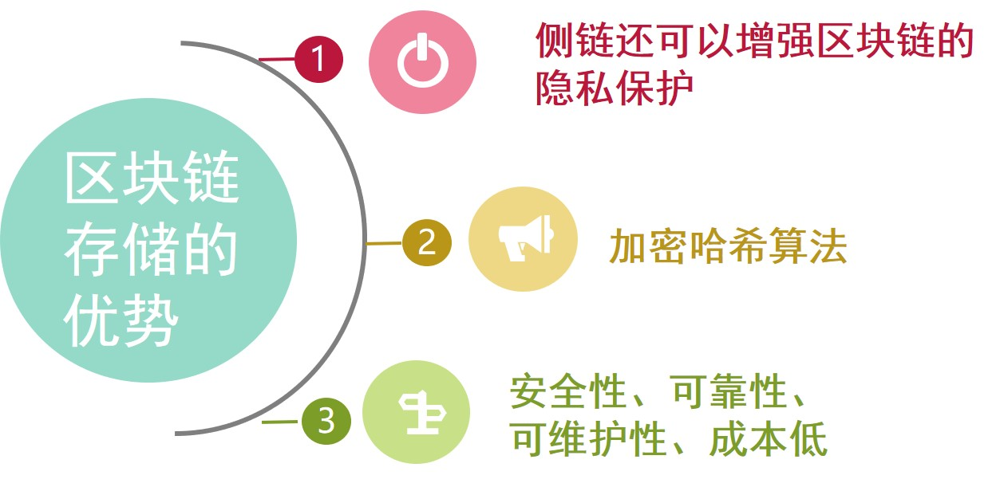

据Gartner《2018年十大战略科技发展趋势》报告中显示，区块链已经被Gartner预测为2018年十大战略技术之一， 这是除人工智能、机器学习、VR/AR之外的另一个技术风口。区块链是由多独立节点参与的分布式数据库系统,也可以理解为分布式账簿。 由这些节点共同维护.它的特点是不易篡改、很难伪造、可追溯.区块链记录所有 发生交易的信息,过程高效透明,数据高度安全.凡是需要公正、公平、诚实的应 用领域,都可以应用区块链技术.区块链把数据分成不同的区块,每个区块通过特 定的信息链接到上一区块的后面,前后顺连,呈现一套完整的数据.每个区块的块 头包含前一个区块的哈希值,该值是对前区块的块头进行哈希函数计算而得到。
